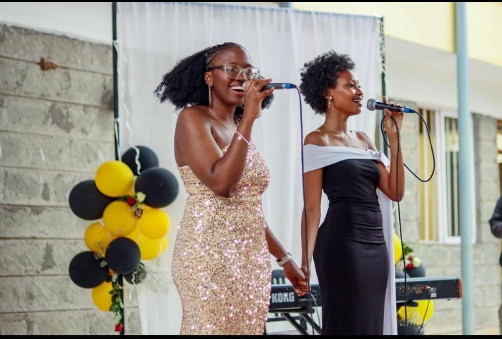
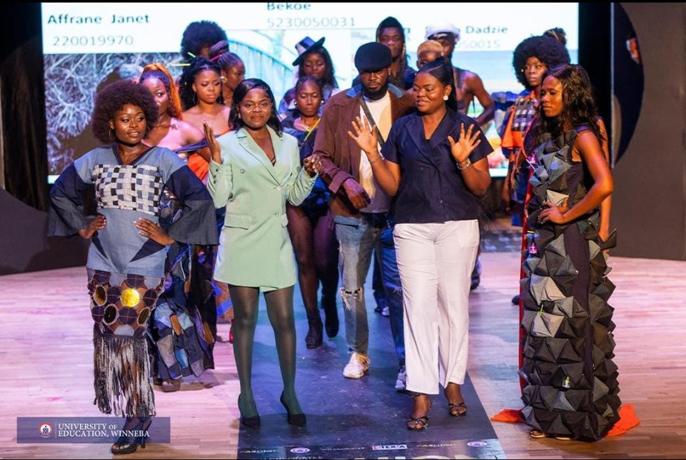
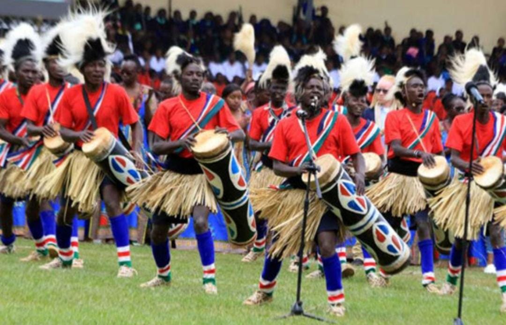
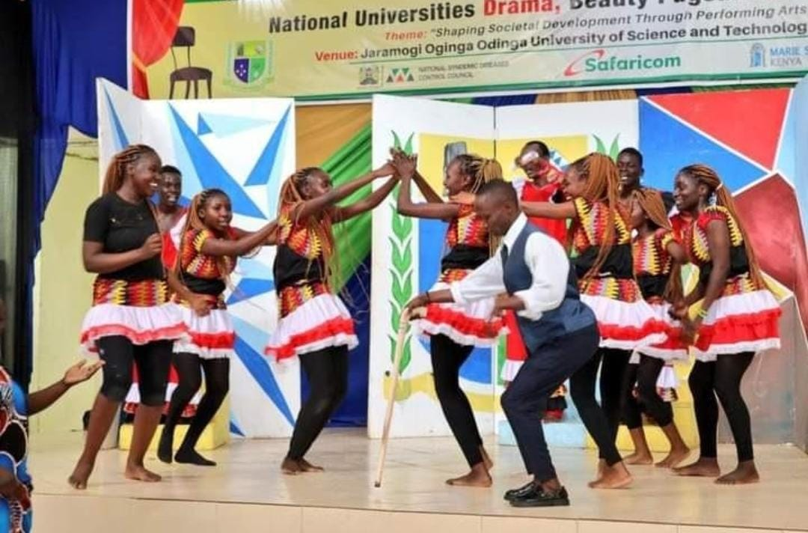
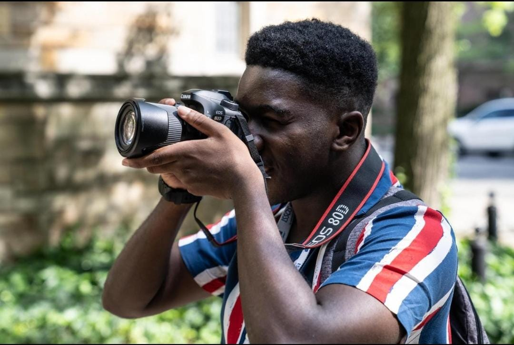
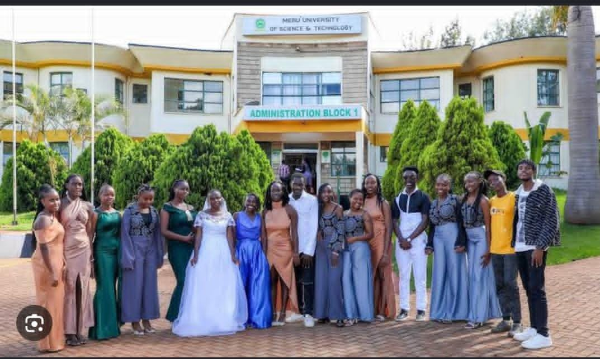

Music & Entertainment
Music brings students together through singing, dancing and entertainment. Discover campus musicians, choirs, DJs and upcoming performers.
University life is not only about books and examinations. It is also about discovering talents, expressing ideas and celebrating different cultures. From music and fashion to poetry, dance and photography, students have an opportunity to showcase their creativity and inspire others.

Music brings students together through singing, dancing and entertainment. Discover campus musicians, choirs, DJs and upcoming performers.

Fashion is a powerful form of expression. Explore student designers, creative outfits, modelling and fashion shows.

Celebrate Meru traditions through traditional dances, cultural performances and modern dance styles.
Words have power. Discover talented student poets using spoken word to express emotions, experiences and social issues.

From comedy to serious stage performances, student actors use theatre to entertain, educate and tell powerful stories.

Explore photography, painting, graphic design and digital creativity through the eyes of talented students.

Creativity and innovation took the spotlight when Meru University Fashion and Design Management students showcased their designs during the university's first fashion show. The students presented different creations, including men's wear, women's wear, corporate wear, costumes and interior décor.
The showcase demonstrated how students can transform classroom knowledge into practical creative work and entrepreneurial opportunities.
Read Original StoryEvery student has a story, a talent and a creative side worth celebrating. Let your creativity shine.